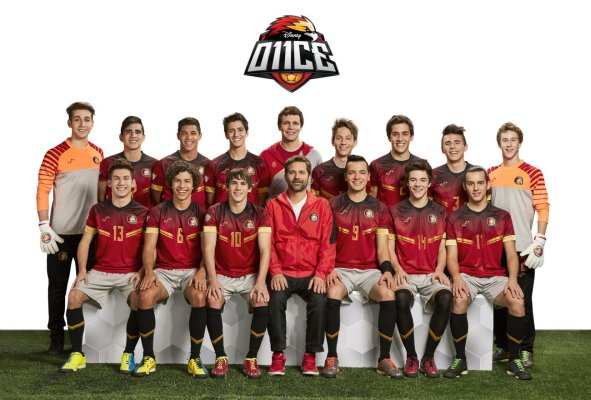

O11CE (lê-se "Once") é uma série argentina para jovens, estreada em 2017 no Disney XD da América Latina. As três primeiras temporadas foram emitidas entre 2017 e 2019. Em 2026 chegou ao Disney+ uma nova temporada, "O11CE: New Generation". A série baseia-se na história de Gabriel Moreti, Gabo, jovem de 17 anos que mora numa aldeia no centro da Argentina, Álamo Seco, e recebe um convite para jogar numa escola o IAD, reconhecido por revelar talentos ao mundo do futebol. Esta séria é muito mais que uma série de futebol, sendo marcante para quem a vê mesmo quem não goste de futebol. Gabo e companhia prometem com as suas aventuras e desafios prender qualquer um ao ecrã.

Temas abordados na série indespensáveis para o quotidiano:
Quer saber mais? Visita a página da série na Wikipédia.